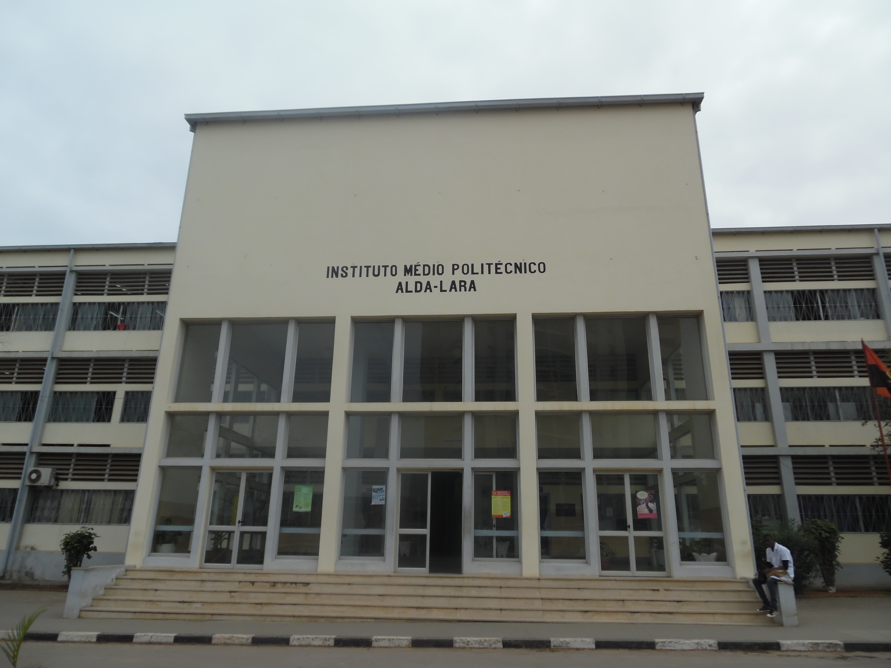

Seja Bem-Vindo ao IPIAL
O Instituto Médio Politécnico Alda Lara (IMPAL), é uma escola de ensino médio-técnico angolana localizado no município da Ingombota, na província de Luanda. O instituto é de propriedade do Ministério da Educação de Angola.
O nome referido é uma homenagem referida a escritora angolana Alda Lara, que também foi uma das grandes ativistas pela independência do país.
É a maior escola pública do país, sendo também uma das maiores escolas do continente africano.
História
Após o fim da Guerra Civil Angolana o governo central estudava maneiras de reconstruir as escolas, o Ministério da Educação angolano criou o programa Reforma do Ensino Técnico Profissional (RETEP), que consistia na recuperação/criação de escolas de ensino médio técnico em todo o país.
O IMPAL foi fundado na década de 1990, mas somente veio consolidar-se em 28 de fevereiro de 2002, quando ganhou estrutura própria, passando por uma reinauguração.
Em 2000 concluiu seu primeiro ciclo de formação contínua de professores, repetindo a classe em 2004
Cursos
No IMPAL, são ministradas as aulas dos seguintes cursos técnicos:
- Construção Civil
- Desenhador Projectista
- Tecnico Obras
- Informática
- Tecnico de Informática
- Electrecidade
- Tecnico de Energia e Instalações Electricas
Infraestrutura
O edifício do IMPAL é composto por:
- 22 salas normais de aula;
- 11 laboratórios;
- 1 Biblioteca
- 2 ginásios com balneários;
- 1 refeitório;
- 1 parque de estacionamento de viaturas.
Além desses, há outros espaços administrativos, de suporte e de vivência.
Quadro de Pessoal
Docentes
Constituído por 142 professores (Sendo 119 masculinos e 23 femininos), de reconhecido nível académico e profissional preenchem o quadro de pessoal da escola.
Discentes
A população discente, cerca de 6000 alunos de ambos os sexos, com idades compreendidas entre 14 a 45 anos de idade.Os estudos mínimos de entrada, á 10ª classe, frequentando os três turnos (Manhã, tarde e noite) os cursos de nível 3 pertecentes as áreas de formação do subsistema do ensino técnico profissional.
Técnicos administrativos
Com 60 funcionários para serviços administrativo e auxiliares (sendo 26 masculino e 34 femininos).

Instituto Politécnico Industrial Alda-Lara
Informação |
|
|---|---|
| localização | Angola |
| Tipo de Instituição | Escola pública de ensino secundário e técnico |
| Abertura | 1996 |
| Director(a) | Manuel Xavier Pacavira |
| Números de estudantes | 6000 |
Endereço:
Rua Bento Banha Cardoso, Ingombota, Luanda, Angola
Coordenadas GPS:
- Latitude: -8,82355º(8º 49' 25" sul)
- Longitude: 13,23354º(13º 14' 1" lest)
Hórario de Funcionamento:
- Segunda a Sexta-feira: 07:00 - 17:20
- Sábado e Domingo: Fechado
Contactos:
- Telefone: (+244) 923210868
Redes Sociais: